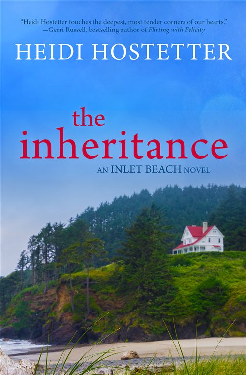

The Girl I Used to Be
Jill Goodman changed her whole life to marry the man she loved, and his betrayal leaves her reeling. When she stumbles upon her husband’s secret, she has the means for revenge. Does she take it? Would you?
Stories about finding your way home…
Jill Goodman changed her whole life to marry the man she loved, and his betrayal leaves her reeling. When she stumbles upon her husband’s secret, she has the means for revenge. Does she take it? Would you?
A gripping, emotional read that will keep you turning the pages late into the night, perfect for fans of Amanda Prowse, Elin Hilderbrand and Diane Chamberlain.
“This is hands-down one of the Top 10 Summer Reads.”
All the best things happen on the New Jersey Shore, so that’s where the Dewberry Beach novels are set. If you lived in Dewberry Beach, you’d stroll to the bakery on a weekend morning for a corn muffin and cup of coffee. You’d sit outside and chat with your neighbors about nothing in particular. And if you chose the inlet path on the way home, you’d see children crabbing from the pier and you’d smell the sea air, threaded with salt water and possibility.
“Heidi isn’t simply a writer, she’s an artist… Her descriptions resonate with all your senses… Heidi creates people you care about.”— Five stars, NetGalley Review
Jill Goodman changed her whole life to marry the man she loved, and his betrayal leaves her reeling. When she stumbles upon her husband’s secret, she has the means for revenge. Does she take it? Would you?

When Kaye Bennett summons her adult children to the family’s shore house, she anticipates a summer of nostalgia. But old resentments—and a heart-stopping accident—force the Bennetts to confront the secrets they’ve been holding back.
If you like Gilmore Girls’ Stars Hollow, you’ll love Inlet Beach. A quirky little beach town on the coast of Oregon, Inlet Beach is the kind of place where everyone knows everyone else, and each of them has an opinion they don’t mind sharing.
“Wonderful story about a family reuniting and rediscovering their home and their hometown. I think Heidi has created a strong basis for many more stories.”— Highly recommended, Five stars

Three bitterly estranged sisters inherit a run-down beach house from a relative they don’t remember, in a town they’ve never visited. Over the course of a crisp Pacific Northwest spring, they’ll attempt to repair the house and rebuild their family.
At Inlet Beach, storefronts are draped with garland and dusted with Christmas magic—but on the eve of the tree lighting, police find a runaway in trouble, and the town must decide how far they’ll go to give him another chance.
Spanish moss dripping from the branches of gnarled oak trees, afternoon tea in a quiet garden, an antebellum mansion that has been home to seven generations of Rutledge women. Stories set in the heart of Charleston, South Carolina.
“I was so captivated by the story that I started in the morning and read through the entire text until turning the lights out in the evening with a satisfied smile. Heidi is a master author who has found the story-writing groove.”

Broke and escaping an abusive relationship, Joanna Rutledge Reed returns to Charleston and the sister who’s resented her ever since she left. When tragedy strikes, the two sisters must work together to save their family and its business.

It’s 1953 in Charleston, and Eudora Grace Gadsden’s life has been planned for her since birth. But when her attempt to change her destiny goes awry, she must rely on her own hidden strength to build the life she wants.
Heidi’s newest novel takes place in a small town nestled in the Berkshires of Western Massachusetts. In landscape of stone walls, narrow country roads, and echoes of the past, Norma Hamilton will find that One Small Kindness can change everything.
There’s just something about the way a story unfolds that feels magical. When I was a kid, I used to ride my bike down to the public library on Saturday mornings and get lost in the stacks. In the afternoon I’d pedal back up the hill, my basket loaded with books I couldn’t wait to read.
When I started writing my own stories, I included all the things I liked to read: description that brings settings to life, characters who become friends, struggles that reflect real life, and always –– always –– a happy ending.
Read Heidi’s Full Story